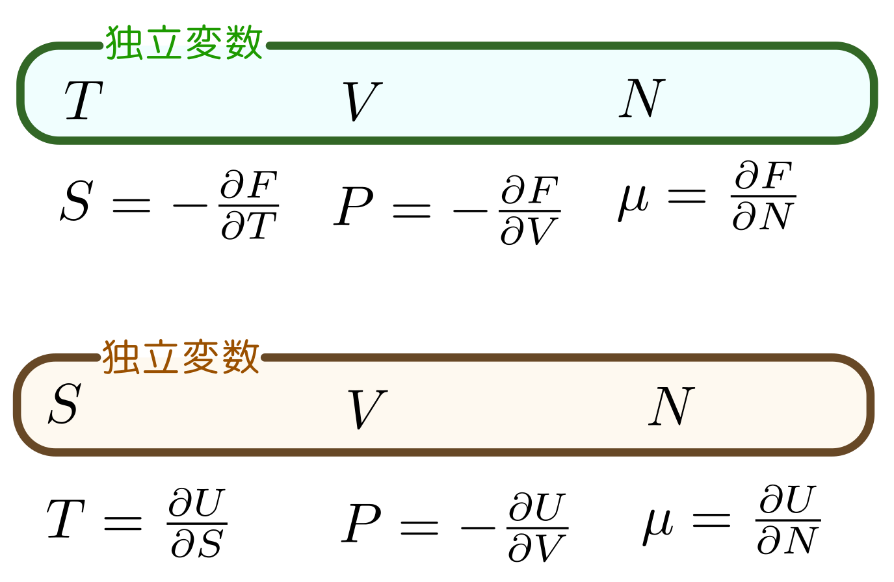

ここまでで、熱力学を記述するための独立変数（正確には、この中から独立変数を選ぶことになる、独立変数候補）は、
温度$T$,エントロピー$S$,圧力$P$,体積$V$,物質量（モル数）$N$
である。そしてこれらにより表現される従属変数が内部エネルギー$U(T;V,N)$とヘルムホルツの自由エネルギー$F[T;V,N]$である。
これらの独立変数・従属変数の間の関係を考えると、まず（この式がエントロピーの定義である）、
$$F[T;V,N]=U(T;V,N)-TS(T;V,N)$$がある。また、微分を使った関係として、
$${\partial U(T;V,N)\over \partial T}=T{\partial S(T;V,N)\over \partial T}$$もあった。
ヘルムホルツ自由エネルギーの定義（等温準静操作で仕事をすると、その仕事の分だけ$F$が減る）を式で表現すると$\Delta F=-P\Delta V$（$P\Delta V$が系のする仕事）であり、これを偏微分を使って表現すれば、
$${\partial F[T;V,N]\over\partial V}=-P(T;V,N)$$である。
一方、断熱準静操作での仕事は$\Delta U=-P\Delta V$となる。ただしこの時は温度は一定ではないから、${\partial U(T;V,N)\over\partial V}=-P(T;V,N)$ではない（←違う関数だから当たり前と言えば当たり前だが、この違いは重要）。
断熱準静操作を考えるならば、$T$を固定するのではなく、$S$を固定する微分を行いたいところである（つまり後で出てくるように、$-{\partial U[S,V,N]\over\partial V}$を計算すれば圧力が出るのである）。次にヘルムホルツ自由エネルギーの微分についてもう少し考えよう。
ヘルムホルツの自由エネルギー$F[T;V,N]=U(T;V,N)-TS(T;V,N)$を$T$で微分してみる。
$$ {\partial F[T;V,N]\over\partial T}={\partial U(T,V,N)\over\partial T}-S(T;V,N)-T{\partial S(T;V,N)\over \partial T} $$となる。
すでに示したように、${\partial U(T,V,N)\over\partial T}=T{\partial S(T;V,N)\over \partial T}$だから、
$$ {\partial F[T;V,N]\over\partial T}=-S(T;V,N) $$である。つまり、$F$を$T$で微分すると$S$が求められる。
ということは、$U(T;V,N)$は
$$ U(T;V,N)=F[T;V,N]-TS(T;V,N)=F[T;V,N]+T{\partial F[T;V,N]\over \partial T}=-{1\over T^2}{\partial\over \partial T}\left({F[T;V,N]\over T}\right) $$という計算で$F$から求めることができる（ところが、逆はできない！）。
ここで、$F$に対しては「$T$で微分すると$-S$」「$V$で微分すると$-P$」という関係ができている。これはいわば、$T\leftrightarrow S$と$P\leftrightarrow V$という「相棒関係」があるということである（では$N$には相棒はいないのかというと、後で出てくる）。
理想気体の場合の内部エネルギーとヘルムホルツ自由エネルギーは、
$$ U(T;V,N)=cNRT+Nu,~~~~F[T;V,N]=-NRT\log\left({T^cV\over (T^*)^c v^*N}\right)+Nu $$となった。ここで基準となる体積$V^*$は、$V^*=v^*N$と書きなおしている（$N$依存性をはっきりさせるため）。
ここまで書いてきた$U$は本来$T,V,N$の関数だったが、理想気体の場合は$V$によらない（よって上の式は$U(T;N)=cNRT+Nu$と書き直すべきかもしれない）。
さっき、$F[T;V,N]\to U(T;V,N)$はできるが$U(T;V,N)\to F[T;V,N]$はできない、と述べたが、この例ではそれが非常にわかりやすい（$U(T;N)=cNRT+Nu$という式から$V$の情報は得られそうにない）。
ここでエントロピーはどうなっているかを考えてみよう。
$$ S=cNR+NR\log\left({T^cV\over (T^*)^c v^*N}\right) $$から、
$$ \begin{array}{rl} {S\over cNR}-1=&\log\left({TV^{1\over c}\over T^*(v^*N)^{1\over c}}\right)\\ \exp\left({S\over cNR}-1\right)=&{TV^{1\over c}\over T^*(v^*N)^{1\over c}}\\ \end{array} $$ゆえに、$T={T^*(v^*N)^{1\over c}\over V^{1\over c}}\exp\left({S\over cNR}-1\right)$となる。これを使うと$U$は
$$ U[S,V,N]=cNR\times{T^*(v^*N)^{1\over c}\over V^{1\over c}}\exp\left({S\over cNR}-1\right)+Nu $$と表現される。$T,V,N$でなく$S,V,N$で表したわけだが、こうすることには意味がある。
上で考えた$U[S,V,N]$を$S,N$を一定にしつつ$V$で偏微分する。 $$ {\partial U[S,V,N]\over \partial V}={\partial \over \partial V}\left(cNR\times{T^*(v^*N)^{1\over c}\over V^{1\over c}}\exp\left({S\over cNR}-1\right)+Nu\right) $$ という式を見るとややこしそうだが、よく見ると$V$は一箇所しかないので、それ以外の足算になっている部分は微分すると消え、掛算になっている部分は素通りさせて外に出し、結果は
$$ {\partial U[S,V,N]\over \partial V}=cNR\times{T^*(v^*N)^{1\over c}}\exp\left({S\over cNR}-1\right){\partial \over \partial V}\left({1\over T^{1\over c}}\right) $$ となり、この微分は${\partial \over \partial V}\left({1\over T^{1\over c}}\right)=-{1\over c}{1\over V^{{1\over c}+1}}$と実行され、 $$ {\partial U[S,V,N]\over \partial V}=-NR\times\underbrace{{T^*(v^*N)^{1\over c}\over V^{1\over c}}\exp\left({S\over cNR}-1\right){\partial \over \partial V}\left({1\over T^{1\over c}}\right)}_T\times{1\over V} $$となり、ちゃんと$P={NRT\over V}$が出る。
一方、${\partial F[T,V,N]\over \partial V}$の方も一見ややこしそうだが、微分すべき相手は本質的に$\log V$だけなので、
$$ {\partial F[T,V,N]\over \partial V}={\partial \over \partial V}\left(-NRT\log\left({T^cV\over (T^*)^c v^*N}\right)+Nu\right)=-NRT {\partial (\log V)\over \partial V}=-{NRT\over V}=-P $$という結果になる。
こうして、違う関数を微分しているのに、結果が同じになった（これはもちろん、偶然ではない）。
$F[T;V,N]$は「完全な熱力学関数」だが、$U(T;V,N)$はそうではない。$F[T;V,N]$があれば他の量は作れるが、$U(T,V,N)$からはそうはいかないのである。
圧力$P$は$P(T;V,N)=-{\partial F[T;V,N]\over \partial V}$で出せて、理想気体なら結果は$-{NRT\over V}=-P$となり、状態方程式$PV=NRT$が出てくる（$U$は$V$を含んでないから${\partial U\over\partial V}$のような計算をしても$P$を出すことは不可能である）。
ここで$P=-{\partial F\over \partial V}$となるのは、$F$の定義によって決まることで、いわば「当たり前」である。
また、
$$ S(T;V,N)=-{\partial F[T;V,N]\over \partial T}=NR\log\left({T^cV\over (T^*)^c v^*N}\right)+NRT \times {c\over T}=cNR+NR\log\left({T^cV\over (T^*)^c v^*N}\right) $$のようにしてエントロピーも出てくる。
これを一つの式にまとめて書くと、
$$ F[T+\mathrm dT;V+\mathrm dV,N]=F[T;V,N]-\underbrace{\left(-{\partial F[T;V,N]\over \partial T}\right)}_S\mathrm dT-\underbrace{\left(-{\partial F[T;V,N]\over \partial V}\right)}_P\mathrm dV $$となる。
としよう。$\mu$は化学ポテンシャルと呼ばれる量で、物質量を増やした時の$F$の増加率になる（←今週はまだここまで話せてない）。これを縮めて、
$$ \mathrm dF[T;V;N]=-S\mathrm dT-P\mathrm dV+\mu\mathrm dN $$と書く（最後だけ符号がプラスだが、それぞれの偏微分係数の物理的意味に合わせているのでこうなってもしかたない。
$U(T;V,N)=cNRT+Nu$はこれから圧力を導いたりできないから完全な熱力学関数になってない。では
$$ U[S,V,N]=cNR\times{T^*(v^*N)^{1\over c}\over V^{1\over c}}\exp\left({S\over cNR}-1\right)+Nu $$はどうか（こっちは完全な熱力学関数なので、括弧を「(」ではなく「[」にする）。これを$V$で微分してマイナスをつけると圧力になることはすでに見つけた（微分のとき、$S,N$を固定して微分していることに注意）。
では温度$T$は出てくるのか、ということでこれを$S$で微分してみると、
$$ {\partial U[S,V,N]\over \partial S}=cNR\times{T^*(v^*N)^{1\over c}\over V^{{1\over c}}}\times{1\over cNR}\exp\left({S\over cNR}-1\right)={T^*(v^*N)^{1\over c}\over V^{{1\over c}}}\exp\left({S\over cNR}-1\right)=T $$となって、ちゃんと$T$が出てくる。
これは、前に計算した、${\partial U(T,V,N)\over \partial T}=T{\partial S(T,V,N)\over \partial T}$という式を考えてもわかる。これは$\mathrm dV=0,\mathrm dN=0$という状況下において${\mathrm dU\over \mathrm dT}=T{\mathrm dS\over\mathrm dT}$と言っているのだから、$T={\mathrm dU\over\mathrm dS}$（ただし、$V,N$が一定という条件において）である。
つまり、
$$ U[S+\mathrm dS,V+\mathrm dV,N+\mathrm dN]=U[S,V,N]+\underbrace{\left({\partial U[S,V,N]\over \partial S}\right)}_T\mathrm dS-\underbrace{\left(-{\partial U[S,V,N]\over \partial V}\right)}_P\mathrm dV+\underbrace{\left({\partial U[S,V,N]\over \partial N}\right)}_\mu\mathrm dN $$のようになっている。略記するなら、
$$ \mathrm dU[S,V,N]=T\mathrm dS-P\mathrm dV+\mu\mathrm dN $$である。
ここで、$-{\partial F[T;V,N]\over \partial V}$も$-{\partial U[S,V,N]\over \partial V}$もどちらも同じ$P$となった。$U$と$F$は$F=U-TS$という関係だから違う関数である。違う関数を、違う方法（一方は$T,N$を固定して、もう一方は$S,N$を固定して）で微分した結果が同じになっている。これは「保証」されていることなのだろうか（今は理想気体の例でそうだったが、いつでもそう言えるのだろうか）、ということを考えてみる。
そのため、まず$T,V,N$を独立変数として、
$$ F[T;V,N]=U[S(T;V,N),V,N]-T\times S(T;V,N) $$と書いてみて、これを$V$で微分してみると、
$$ {\partial F[T;V,N]\over \partial V}= \underbrace{{\partial U(S(T;V,N),V,N)\over \partial S}}_T{\partial S\over \partial V} +{\partial U(S(T;V,N),V,N)\over \partial V} -T\times {\partial S(T;V,N)\over \partial V}={\partial U(S(T;V,N),V,N)\over \partial V} $$となる。つまり、$-TS$の項のおかげで、$-{\partial F[T;V,N]\over \partial V}$と$-{\partial U[S,V,N]\over \partial V}$が同じになる。
同じ式を、独立変数が$S,V,N$だと思って書けば
$$ F[T(S,V,N);V,N]=U[S,V,N]-T(S,V,N)\times S $$となるが、これを$V$で微分すると、
$$ \underbrace{{\partial F[T(S,V,N);V,N]\over \partial T}}_S{\partial T(S,V,N)\over \partial V} +{\partial F[T(S,V,N);V,N]\over \partial V} ={\partial U[S,V,N]\over \partial V}-{\partial T(S,V,N)\over \partial V}\times S $$となってやはり一致する。
このように、変数を$T$から$S=-{\partial F\over\partial T}$へ、もしくは$S$から${\partial U\over \partial S}$へとのように変えることを「ルジャンドル変換」と呼ぶ（ルジャンドル変換をちゃんとしないと、完全な熱力学関数にならなくて困る）。
$U$と$F$の間のルジャンドル変換は
$$ U[S(T;V,N),V,N]=F[T;V,N]-T\overbrace{\partial F[T,V,N]\over \partial T}^{-S} $$または
$$ F[T(S,V,N);V,N]=U[S,V,N]-S\overbrace{\partial U[S,V,N]\over \partial S}^T $$のように対称な形に書ける（これが、$T\leftrightarrow S$が「相棒」だということ）。
なお、ルジャンドル変換は解析力学でもラグランジアンとハミルトニアンの関係
$$ H(p(\dot x,x),x)=\overbrace{\partial L(\dot x,x)\over \partial \dot x}^p\dot x -L(\dot x,x) $$として現れた（定義が少し違って、引き算の方向が逆であるが、やっていることは本質的に同じである）。
$U$と$F$は$F=U-TS$という関係でつながった「別の関数」だった。そして、$F$は$T;V,N$という変数で記述すると完全な熱力学関数になり、$U$は$S,V,N$という変数で記述すると、完全な熱力学関数になる。こうなる理由は、$F$は等温準静操作（$T$を一定に保つ操作）における仕事で定義され、$U$は断熱準静操作（$S$を一定に保つ操作）における仕事で定義されているということを思えば納得が行く。
それぞれを違う方法（一方は$T,N$を固定して、もう一方は$S,N$を固定して）で$V$で微分した結果は、同じ圧力$P$（にマイナス符号をつけたもの）になっていた（同様に$N$で微分しても結果はどちらも同じになる）。
上で、理想気体の例で具体的に
$$ {\partial F[T;V,N]\over \partial V}={\partial U[S,V,N]\over\partial V} $$ということを示した。具体的には示してないが、
$$ {\partial F[T;V,N]\over \partial N}={\partial U[S,V,N]\over\partial N}=\mu $$もほぼ同様に示せる。この量$\mu$は化学ポテンシャルと呼ばれる量で、物質量を増やした時の$F$もしくは$U$の増加率になる。
以上は二つの関数が「ルジャンドル変換」でつながっていることで「保証」されている。
ついでながら、残る変数での微分は、
$$ \begin{array}{rl} {\partial F[T;V,N]\over \partial T}=&S(T;V,N)\\ -{\partial U[S,V,N]\over \partial S}=&T(S,V,N) \end{array} $$という関係になっていた（今度は等しいのではなく、互いに変数が移り変わるようになっている）。
変数の間の関係を$F$の場合と$U$の場合でまとめると、

のようになる。
これを微分形式という書き方でまとめておこう。一般に多変数関数$f(x,y,\cdots)$の独立変数が変化したときの変化は、
$$ f(x+\mathrm dx,y+\mathrm dy,\cdots)=f(x,y,\cdots)+{\partial f(x,y,\cdots)\over\partial x}\mathrm dx+{\partial f(x,y,\cdots)\over\partial y}\mathrm dy+\cdots $$のように書ける。
ヘルムホルツの自由エネルギー$F[T;V,N]$の微小変化は
$$ F[T+\mathrm dT;V+\mathrm dV,N+\mathrm dN]=F[T;V,N]-\underbrace{\left(-{\partial F[T;V,N]\over \partial T}\right)}_{S(T;V,N)}\mathrm dT-\underbrace{\left(-{\partial F[T;V,N]\over \partial V}\right)}_{P(T;V,N)}\mathrm dV+\underbrace{\left({\partial F[T;V,N]\over \partial N}\right)}_{\mu(T;V,N)}\mathrm dN $$となる。これを縮めて、
$$ \mathrm dF[T;V;N]=-S(T;V,N)\mathrm dT-P(T;V,N)\mathrm dV+\mu(T;V,N)\mathrm dN $$さらに縮めて、
$$ \mathrm dF=-S\mathrm dT-P\mathrm dV+\mu\mathrm dN $$と書く（最後だけ符号がプラスだが、それぞれの偏微分係数の物理的意味に合わせているのでこうなってもしかたない。
同様に$U[S,V,N]=F[T(S,V,N);V,N]+T(S,V,N)S$の方の微分を考えると（まず略記で計算する）、
$$ \mathrm dU=\underbrace{-S\mathrm dT-P\mathrm dV+\mu\mathrm dN}_{\mathrm dF}+\mathrm dT S+T\mathrm dS=T\mathrm dS-P\mathrm dV+\mu\mathrm dN $$となる。ちゃんと関数の引数も含めて書くと、
$$ \mathrm dU[S,V,N]=T(S,V,N)\mathrm dS-P(S,N,N)\mathrm dV+\mu(S,V,N)\mathrm dN $$という関係を作ることができる。$\mathrm dF[T;V;N]=-S\mathrm dT-P\mathrm dV+\mu\mathrm dN$にせよ$\mathrm dU[S,V,N]=T\mathrm dS-P\mathrm dV+\mu\mathrm dN$にせよ、それぞれの独立変数が微小変化した時に従属変数（$F$と$U$）がそれに応答してどのように変化するかを余すことなく記述していることになる。
たとえば、$\mathrm dF[T;V,N]=-S\mathrm dT-P\mathrm dV+\mu\mathrm dN$という式は、
と「読み取る」ことができる。
新しく化学ポテンシャルが導入されたので、化学ポテンシャルを含む式を１つ導出しておく。
$F[T;V,N]$の３つの引数のうち、$V,N$は示量変数だから、系全体を$\lambda$倍すると、
$$ \lambda F[T;V,N]=F[T;\lambda V,\lambda N] $$という式ができる。これを$\lambda$で微分すると、
$$ F[T;V,N]={\partial F[T;\lambda V,\lambda N]\over \partial (\lambda V)}{\partial(\lambda V)\over\partial \lambda}+{\partial F[T;\lambda V,\lambda N]\over \partial (\lambda N)}{\partial(\lambda N)\over\partial \lambda} $$となり、この後$\lambda=1$と置くことで、
$$ F[T;V,N]={\partial F[T;V,N]\over \partial V}V+{\partial F[T;V,N]\over \partial N}N $$という式を得る（これをEulerの関係式と言う）。理想気体の場合で確認すると、
$$ {\partial F[T;V,N]\over \partial V}V=-NRT\times {1\over V}\times V=-NRT $$および
$$ {\partial F[T;V,N]\over \partial N}N=\left( -RT\log\left({T^cV\over (T^*)^c v^*N}\right)-NRT\times\left(-{1\over N}\right)\right)\times N= -NRT\log\left({T^cV\over (T^*)^c v^*N}\right)+NRT $$となってこの例では確かに成立している。
圧力$P$と化学ポテンシャル$\mu$の式を考えると、この式は
$$ F=-PV+\mu N $$ということになる。つまり$F,P,V,N$がわかれば$\mu$は計算できる量になる。
まず、$U\to F$のルジャンドル変換のグラフを見よう。
理想気体の内部エネルギーの$S,V,N$を独立変数とした表現は
$$ U[S,V,N]=cNR\times{T^*(v^*N)^{1\over c}\over V^{1\over c}}\exp\left({S\over cNR}-1\right)+Nu $$だった。一方ヘルムホルツ自由エネルギー$F$の$T,V,N$を独立変数とした表現は
$$ F[T;V,N]=-NRT\log\left({T^cV\over (T^*)^c v^*N}\right)+Nu $$${\partial U\over \partial S}=T,{\partial F\over\partial T}=-S$が成立していることに注意。
であり、$F$を$S,V,N$で書くと
$$ F(S,V,N)=NR{T^*(v^*N)^{1\over c}\over V^{1\over c}}\left(1-{S\over cNR}\right)\exp\left({S\over cNR}-1\right)+Nu $$となる
（以上二つのグラフは薄い線で表現している）。
この「$TS$を引く」ということの物理的意味を述べておこう。$U$と$F$の違いは「断熱されているかどうか」あるいは「周囲から熱という形でエネルギーの補給を受けることができるかどうか」であった。その理屈からするとなんとなく「周囲から熱による補給を受けられる$F$の方が多いはず」と考えてじゃあなんで引くの？と思ってしまう人もいるかもしれない。
ここで、エネルギー（内部エネルギーだろうがヘルムホルツ自由エネルギーだろうが）は絶対値が大事なのではなく『差』が大事という点に注意して欲しい。
仕事をするには「仕事をするもの」が自分のエネルギーを下げなくてはいけない。等温環境においては、$F=U-TS$を下げることによってその分仕事ができる。断熱操作では「$U$を下げる」ことでしか仕事ができないが、等温操作では「$U$を下げる」ことと「$TS$を増やす（←等温操作なのだからこれは「エントロピー$S$を増やす」ことと同じ）でも仕事ができる、ということになる。
こう考えてもよい。今等温準静操作を考えているから、トータルのエントロピーは増大しない。そこで、環境と系の持つエントロピーの和を$S_全$とする。系は$S$の、環境は$S_全-S$のエントロピーを持っていることになる。
環境から熱の形で（$T\Delta S$という形で）エネルギーが補給されるとすると、環境は後$T(S_全-S)$だけエネルギーを補給できる用意があると考えることもできる。つまり「環境＋系」という全系には「隠れたエネルギー」$T(S_全-S)$がある。このうち$TS_全$の部分は「どうせ定数だし」と忘れることにすれば、$U-TS$が「等温環境の中での系の持つエネルギー」と解釈できることになる。
もう一度大事な式を書いておくと、
$$ \begin{array}{rrrr} \mathrm dF[T;V,N]=&-S(T;V,N)\mathrm dT&-P(T;V,N)\mathrm dV&+\mu(T;V,N)\mathrm dN\\ \mathrm dU[S,V,N]=&T(S,V,N)\mathrm dS&-P(S,V,N)\mathrm dV&+\mu(S,V,N)\mathrm dN \end{array} $$である。この二つは$F=U-TS$という式でつながる。上の段は$T;V,N$の関数として、下の段は$S,V,N$の関数として表現されている。$P,\mu$に関しては表現が違うだけで同じ関数である。
上の$\mathrm dF$や$\mathrm dU$を「$F$の全微分」「$U$の全微分」と呼ぶ（気持ちは「全ての変数に関する微分を全部並べた」というところ）。
全微分が全微分であるためには条件があった。その条件の一つの表し方は「二つの偏微分が交換すること」である。たとえば
$$ \begin{array}{rl} {\partial \over\partial T}\left({\partial \over \partial V} F[T;V,N]\right)=&{\partial \over\partial V}\left({\partial \over \partial T} F[T;V,N]\right)\\ {\partial \over\partial T}\left(-P(T;V,N)\right)=&{\partial \over\partial V}\left(-S(T;V,N)\right)\\ {\partial P(T;V,N)\over\partial T}=&{\partial S(T;V,N)\over\partial V} \end{array} $$である。
同様に、$\mathrm dF=-S\mathrm dT-P\mathrm dV+\mu\mathrm dN$という式の二つの項の微分を考えると、
$$ -{\partial P(T;V,N)\over\partial N}={\partial \mu(T;V,N)\over\partial V} $$ $$ -{\partial S(T;V,N)\over\partial N}={\partial \mu(T;V,N)\over\partial T} $$のような式を作ることができる（$\mathrm dU$に関しても同様に３セットの式を作ることができる）。これらをMaxwellの関係式と呼ぶ。
ところで、$U$を$T,V,N$で表現するとすれば、$S(T;V,N)$という関数の微分を考えて、
$$ \mathrm dS(T;V,N)={\partial S(T;V,N)\over \partial T}\mathrm dT+{\partial S(T;V,N)\over \partial V}\mathrm dV+{\partial S(T;V,N)\over \partial N}\mathrm dN $$となる。
これを代入すれば、
$$ \mathrm dU(T;V,N)=T{\partial S(T;V,N)\over \partial T}\mathrm dT+\left(T{\partial S(T;V,N)\over \partial V}-P\right)\mathrm dV+\left(T{\partial S(T;V,N)\over \partial N}+\mu\right)\mathrm dN $$のように$\mathrm dU(T;V,N)$を表すことができる。Maxwellの関係式があるから、
$$ \mathrm dU(T;V,N)=T{\partial S(T;V,N)\over \partial T}\mathrm dT+\left(T{\partial P(T;V,N)\over \partial T}-P\right)\mathrm dV+\left(-T{\partial \mu(T;V,N)\over \partial T}+\mu\right)\mathrm dN $$となり、これから${\partial U(T;V,N)\over \partial T}=T{\partial S(T;V,N)\over\partial T},{\partial U(T;V,N)\over \partial V}=T{\partial P(T;V,N)\over\partial T}-P,{\partial U(T;V,N)\over \partial N}=-T{\partial \mu(T;V,N)\over\partial T}+\mu$を読み取ることができる。
理想気体では$P={NRT\over V}$だから${\partial U(T;V,N)\over \partial V}=T{\partial P(T;V,N)\over\partial T}-P=0$になる。
つまり理想気体の状態方程式からただちに$U(T;V,N)$が$V$に依らないことがわかる。